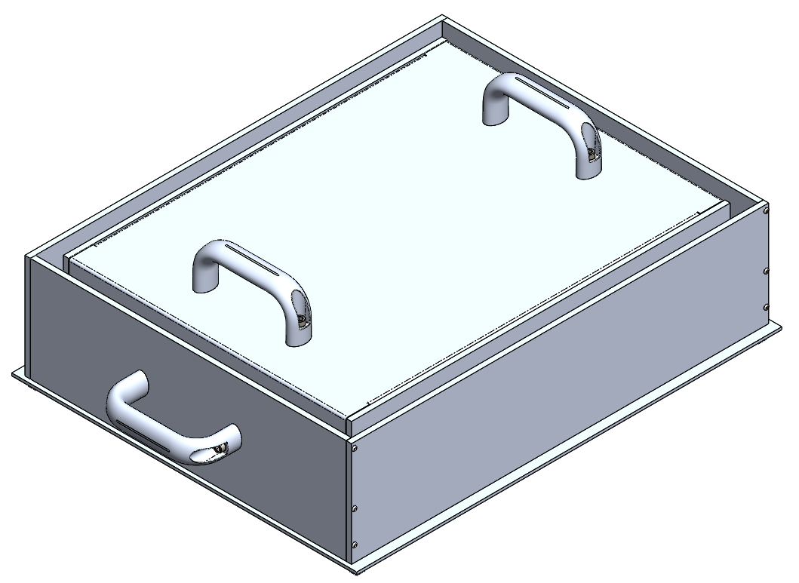
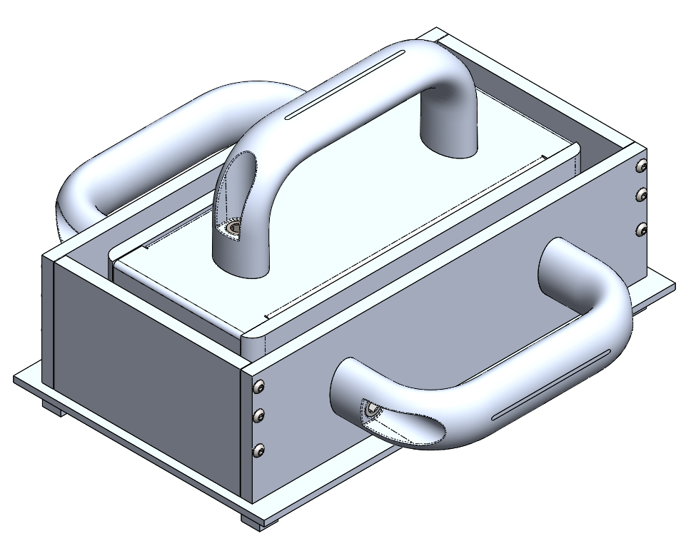
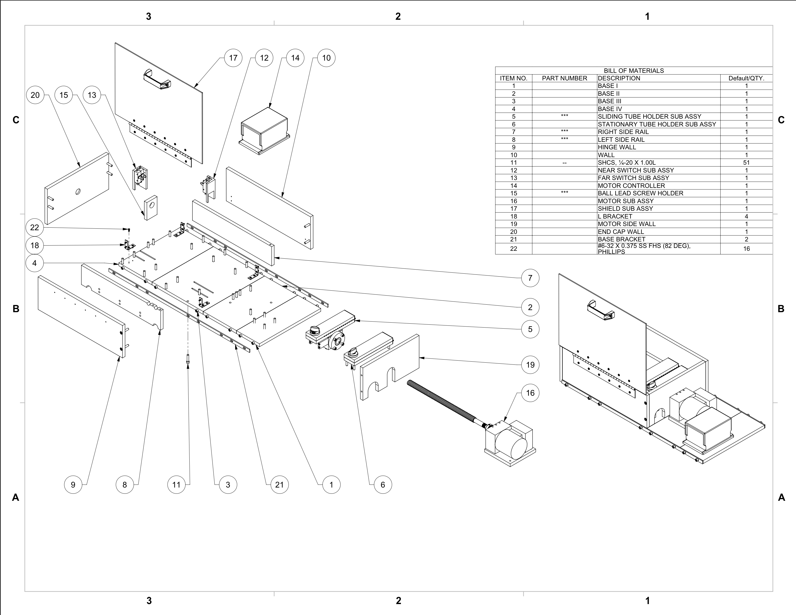

PORTFOLIO
Mk1 & Mk2
 Final Version & Scaled Down Version


Assembly Box
Problem:
- Desktop Metal needed a fixture to be used in the manufacturing proccess of a printer component
– Must house 9 components while they are heat treated
– Must be easy to use
– Must house multiple components at once
– Thermal expansion of parts need to be accounted for
– Cost effective
– Sizing and location of mold must be highly accurate and precise
– All materials and components must be RoHS and REACH certified
Action:
– Used dowel pinholes ans slots to properly align frame walls and keep build accurate
– Guided design around cheapest sizes of stock materials
– Made all same material to keep thermal expansion uniform
– Added inner guide to help load and unload the components during use
– Conferenced with fellow engineers for feesback and revisions
– RoHS & REACH compliant
Result:
– Successfully implemented
– Fixture was well within budget
– Easy to use
– Was scalable so I created a smaller version a month later in a couple hours for a similar use
Tube Stretcher
Problem:
– Consumables department at Nova Biomedical wanted a mechanical tube stretcher
– Tubes need to be pre-stretched so they do not break during use
– Need to be stretched by a machine and not engineers to save costs
– Must be semi-automatic
– More efficient than stretching by hand
– Simple and safe enough to use by anyone
– Adjustable and Accurate enough to stretch to consistent length
Action:
– Researched best way to stretch (motor with ball screw for accuracy, strength, and price)
– Interviewed workers on whether the idea for stretcher would be simple enough to use
– Used limit switches to stop movement to prevent breaking and injury
– Added a slot tracks to allow tubes to be stretched for varying distances
– Used excess parts found in storage to lower cost
– Added a transparent shield to protect user without hindering use
– Designed to be safely stretch up to 12 tubes at once
Results:
– Successfully stretched 12 tubes at a time to proper length
– Saved thousands of dollars and countless hours per year
– Performed testing and vlaidation to implement machine
– Device was implemented on the workfloor
Torsional Test
Problem:
– Need to verify that simutlaions is similar enough to real life
– Will be done via a torsional test
– Test needs to work both in real life and in simulation
Action:
– Researched torsional tests in similar applications (Formula SAE)
– Designed around existing hardware (front lever and rear brace never used)
– Researched proper way to simulate test in SolidWorks FEA
– Designed and executed test
– Compared results against each other
Results:
– Determined results were not what was hoped for
– Started process to look for alternative simulation software
– Will be using ANSYS in the future